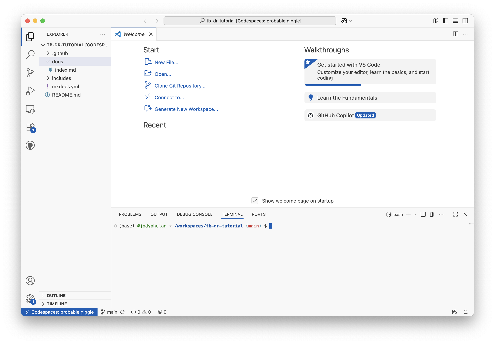
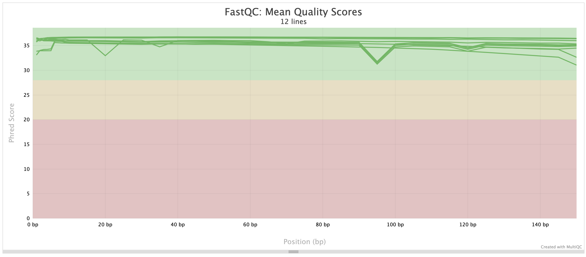

TB Drug resistance tutorial
Learing objectives
- Asses the quality of raw sequence data
- Determine the genetic resistance profiles of TB samples using TB-Profiler
Introduction
In this tutorial, we will learn how to assess the quality of raw sequence data and determine the genetic resistance profiles of TB samples using TB-Profiler. We will be analysing data that was generated for a study that aimed to investigate the genetic diversity of TB strains the Phillipines: Whole genome sequencing analysis of Mycobacterium tuberculosis reveals circulating strain types and drug-resistance mutations in the Philippines.
Setting up the environment
These tools are written in different programming languages and have different dependencies and require a unix operating system to run. There are several options to set up the environment: * Install the tools on your local machine * Use a cloud-based platform such as AWS or Google Cloud to create a virtual machine * Use a containerisation platform such as Docker or Singularity
Installing the tools on your local machine
Windows
This tutorial assumes that you are using a unix operating system. If you are on windows, you will first need to set up wsl on your machine. You can follow the instructions here. Following this, you will have access to a unix terminal and can follow the instructions below.
We will be using a conda environment to manage these dependencies. If you don't have conda installed, you can follow the instructions here.
Using GitHub Codespaces
If you don't want to install the tools on your local machine, you can use GitHub Codespaces to create a cloud-based virtual machine. This will allow you to run the tools in a unix environment without having to install anything on your local machine. You'll need to have a GitHub account to use this service.
GitHub Codespaces
GitHub Codespaces is a cloud-based development environment that allows users to run and edit code directly in a virtual machine (VM) hosted by GitHub. It provides a fully configured workspace, pre-installed with necessary tools like Git, Python, and Docker, eliminating the need for users to set up a local environment. Every GitHub user has a certain number of free Codespace hours per month (120 for a free account), making it an ideal solution for doing some occasional bioinformatics.
Visual Studio Code (VS Code)
VS Code is a lightweight yet powerful code editor that supports multiple programming languages. It also allows users to connect to GitHub Codespaces, allowing users to work on cloud-based VMs as if they were local files. Users will launch GitHub Codespaces via VS Code, enabling them to interact with their virtual machine through a familiar coding interface.
How These Work Together:
- Users launch GitHub Codespaces to create a cloud-based virtual machine.
- They connect to the VM using VS Code, accessing the terminal and code files.
This setup allows users to work on cloud-hosted projects with both command-line and GUI access, making it ideal for bioinformatics and data analysis workflows.
Getting set up
1. Set up a GitHub account
Head over to https://github.com/ and sign up for an account. You can skip this step if you already have an account.
2. Download Visual Studio Code
Get the latest version of vscode from https://code.visualstudio.com/ and follow install instructions from the website.
4. Get connected
Once you have installed VScode, you can connect to your GitHub Codespace using the following steps:
- Open Visual Studio Code.
- Install the GitHub Codespaces extension by clicking on the following link and following instructions: GitHub Codespaces.
- Open the command palette by pressing
Ctrl+Shift+P(Windows/Linux) orCmd+Shift+P(Mac). - Type
Create new Codespaceand select the option. - Enter
jodyphelan/tb-dr-tutorialin the repository field. - You will then be proppted to select a branch. You should select the
mainbranch. - You will be asked what type of instance to create. Select
4 cores, 16GB RAM, 32 GB storageoption.
It should take a few minutes to create the Codespace. Once it's ready, you will be able to access the terminal and files directly from VS Code.
You should see something like this:

If you can't see the terminal, you can open it by clicking on Terminal in the top menu and selecting New Terminal.
Set up bioinformatics software
Before we start, we need to set up the environment. We will be using the following tools:
- FastQC
- MultiQC
- TB-Profiler
- fastq-dl
We can install these software using a tool called conda. Conda is an open-source package management system and environment management system that runs on Windows, macOS, and Linux. Conda quickly installs, runs, and updates packages and their dependencies. Conda easily creates, saves, loads, and switches between environments on your local computer. It was created for Python programs, but it can package and distribute software for any language.
Conda should already be installed in your Codespace. You can check this by running the following command:
conda --version
If you see a version number, then conda is installed. If not, you can install it by following the instructions here. Before we start installing tools, you'll need to initialise conda by running the following command:
Conda initialisation
Before we start installing tools, you'll need to initialise conda by running the following command:
conda init
source ~/.bashrc
This will initialise conda to be loaded every time you open a new terminal. Next we need to add software channels so that conda can find the tools we want to install. Channels are the locations where packages are stored. Conda packages are downloaded from remote channels, which are URLs to directories containing conda packages. The bioconda channel contains bioinformatics software and the conda-forge channel contains a wide range of software packages. Use the following command to add the bioconda and conda-forge channels:
conda config --add channels bioconda
conda config --add channels conda-forge
conda config --set channel_priority strict
The actions above only need to be done once, so you won't need to run these commands again.
Create a new conda environment
Conda environments allow you to create isolated environments that have their own set of software installed. This is useful when you have different projects that require different versions of software. We will create a new conda environment called tb and install the required software in this environment. You can create a new conda environment by running the following command:
conda create -y -n tb fastqc multiqc tb-profiler fastq-dl
This step might take a few minutes (once you see ➜ /workspaces/tb-dr-tutorial (main) $ again you'll be ready to continue).
This command will create a new conda environment called tb and install the required software. You can activate the environment by running the following command:
conda activate tb
You should see (tb) at the beginning of your terminal prompt, indicating that the tb environment is active.
Download the data
We will be using data from the study Whole genome sequencing analysis of Mycobacterium tuberculosis reveals circulating strain types and drug-resistance mutations in the Philippines. The data is available on the European Nucleotide Archive (ENA) under the accession number PRJEB37886. We will be downloading the data using the fastq-dl tool. You can download the data by running the following command:
fastq-dl -o data -a ERR6635398
fastq-dl -o data -a ERR6635159
fastq-dl -o data -a ERR6635124
fastq-dl -o data -a ERR6635248
fastq-dl -o data -a ERR6635174
fastq-dl -o data -a ERR6634973
This will download the raw sequence data for the samples with the accession numbers ERR6635398, ERR6635159, ERR6635124, ERR6635248, ERR6635174, and ERR6634973 to a directory called data.
Assess the quality of the raw sequence data
Before we start analysing the data, it's a good idea to assess the quality of the raw sequence data. We can do this using the fastqc tool. You can run fastqc on the raw sequence data by running the following command:
fastqc data/*.fastq.gz
This will generate a report for each of the raw sequence data files. We will then combine the reports into a single report using the multiqc tool. You can run multiqc on the fastqc reports by running the following command:
multiqc .
This will generate a report called multiqc_report.html that summarises the quality of the raw sequence data. You can open this on a web browser to view the report. Remember, if you are running this on a cloud-based platform, you will need to download the report to view it. You can download it by locating the file in the file explorer on the left-hand side of VS Code, right-clicking on the file, and selecting Download.
There are a few things that are important to look out for in the fastqc/multiqc reports, but the one you'll probably want to look at is the per base sequence quality. This shows the quality of the bases at each position in the read. You want to see a high quality score (green) across most positions. It may be normal to see a drop in quality towards the end of the read.
[]
Determine the genetic resistance profiles of TB samples
Now that we have assessed the quality of the raw sequence data, we can determine the genetic resistance profiles of the TB samples using TB-Profiler. TB-Profiler is a tool that identifies genetic mutations associated with drug resistance in TB samples. You can run TB-Profiler on the raw sequence data by running the following commands:
tb-profiler profile -1 data/ERR6635398_1.fastq.gz -2 data/ERR6635398_2.fastq.gz -p ERR6635398 --snp_dist 100 -t 4 --txt
tb-profiler profile -1 data/ERR6635159_1.fastq.gz -2 data/ERR6635159_2.fastq.gz -p ERR6635159 --snp_dist 100 -t 4 --txt
tb-profiler profile -1 data/ERR6635124_1.fastq.gz -2 data/ERR6635124_2.fastq.gz -p ERR6635124 --snp_dist 100 -t 4 --txt
tb-profiler profile -1 data/ERR6635248_1.fastq.gz -2 data/ERR6635248_2.fastq.gz -p ERR6635248 --snp_dist 100 -t 4 --txt
tb-profiler profile -1 data/ERR6635174_1.fastq.gz -2 data/ERR6635174_2.fastq.gz -p ERR6635174 --snp_dist 100 -t 4 --txt
tb-profiler profile -1 data/ERR6634973_1.fastq.gz -2 data/ERR6634973_2.fastq.gz -p ERR6634973 --snp_dist 100 -t 4 --txt
These commands may take a long time to run! This will run TB-Profiler on each of the raw sequence data files and generate a report for each sample. The reports will contain information about the genetic resistance profiles of the samples. You can open the reports in a text editor to view the results. Specific parameters are used to specify the location of the raw sequence data files (-1 and -2), the output prefix (-p), the SNP distance to use when performing clustering (--snp_dist), and the number of threads (-t). The --txt option is used to generate a text report.
Take a look at one of the reports to see the results. The report will contain information about the genetic resistance profiles of the sample, including the mutations identified and their associated drug resistance. Here we will go through the sections of the report for sample ERR6635398:
Summary
-------
ID: ERR6635398
Date: 2025-09-18 22:51:00.361166
Strain: lineage4.3.4.1
Drug-resistance: Pre-XDR-TB
Median Depth: 112.0
This section contains a summary of the sample, including the sample ID, date of analysis, strain lineage, drug resistance profile, and median depth of coverage.
Lineage report
--------------
Lineage Fraction Family Rd
lineage4 100.000 Euro-American None
lineage4.3 100.000 Euro-American (LAM) None
lineage4.3.4 100.000 Euro-American (LAM) RD174
lineage4.3.4.1 100.000 Euro-American (LAM) RD174
This section contains information about the lineage of the sample, including the lineage, the estimated fraction of the lineage and any associated family names. The Lineage system is hierarchical, so you can see the lineage broken down into sub-lineages.
Resistance report
-----------------
Drug Genotypic Resistance Mechanisms
Rifampicin R rpoB p.Ser450Leu (1.00)
Isoniazid R katG p.Ser315Thr (1.00)
Ethambutol R embB p.Met306Val (1.00)
Pyrazinamide R pncA p.Leu172Pro (1.00)
Moxifloxacin R gyrA p.Asp94Asn (1.00)
Levofloxacin R gyrA p.Asp94Asn (1.00)
Bedaquiline
Delamanid
Pretomanid
Linezolid
Streptomycin R rrs n.514A>C (1.00)
Amikacin R rrs n.1401A>G (1.00)
Kanamycin R rrs n.1401A>G (1.00)
Capreomycin R rrs n.1401A>G (1.00)
Clofazimine
Ethionamide
Para-aminosalicylic_acid
Cycloserine
This section contains information about the drug resistance profile of the sample, including the drugs tested for, the genotypic resistance (R = resistant, blank = no resistance identified), and the mutation identified (frequency of mutation in parentheses).
Resistance variants report
-----------------
Genome Position Locus Tag Gene Name Variant Type Change Depth Estimated Fraction Drug Confidence Comment
7581 Rv0006 gyrA missense_variant p.Asp94Asn 58 1.000 moxifloxacin,levofloxacin Assoc w R ,High-level resistance
761155 Rv0667 rpoB missense_variant p.Ser450Leu 66 1.000 rifampicin Assoc w R
1472359 EBG00000313325 rrs non_coding_transcript_exon_variant n.514A>C 82 1.000 streptomycin Assoc w R
1473246 EBG00000313325 rrs non_coding_transcript_exon_variant n.1401A>G 85 1.000 capreomycin,amikacin,kanamycin Assoc w R
2155168 Rv1908c katG missense_variant p.Ser315Thr 111 1.000 isoniazid Assoc w R High-level resistance
2288727 Rv2043c pncA missense_variant p.Leu172Pro 55 1.000 pyrazinamide Assoc w R
4247429 Rv3795 embB missense_variant p.Met306Val 86 1.000 ethambutol Assoc w R
This section contains information about the specific mutations identified in the sample, including the genome position, gene name, type of variant, change, depth of coverage, estimated fraction of the mutation, associated drug, WHO confidence level, and any comments.
Other variants report
---------------------
Genome Position Locus Tag Gene Name Variant Type Change Depth Estimated Fraction Gene Associated Drug Confidence Comment
7362 Rv0006 gyrA missense_variant p.Glu21Gln 77 1.000 moxifloxacin,levofloxacin Not assoc w R
7585 Rv0006 gyrA missense_variant p.Ser95Thr 61 1.000 moxifloxacin,levofloxacin Not assoc w R
9304 Rv0006 gyrA missense_variant p.Gly668Asp 75 1.000 moxifloxacin,levofloxacin Not assoc w R
576375 Rv0486 mshA missense_variant p.Ala343Val 55 1.000 isoniazid,ethionamide Uncertain significance
761496 Rv0667 rpoB missense_variant p.Tyr564His 84 0.988 rifampicin Uncertain significance
762506 Rv0667 rpoB synonymous_variant c.2700C>T 77 0.974 rifampicin Not assoc w R - Interim
764995 Rv0668 rpoC synonymous_variant c.1626C>G 114 1.000 rifampicin Not assoc w R
775639 Rv0676c mmpL5 missense_variant p.Ile948Val 86 1.000 bedaquiline,clofazimine Not assoc w R - Interim,Not assoc w R
781395 Rv0682 rpsL upstream_gene_variant c.-165T>C 109 1.000 streptomycin Not assoc w R
1364434 Rv1221 sigE missense_variant p.Arg8Trp 119 1.000 pyrazinamide Not assoc w R
1471659 EBG00000313325 rrs upstream_gene_variant n.-187C>T 100 1.000 capreomycin,amikacin,kanamycin,streptomycin Uncertain significance Not found in WHO catalogue
1854300 Rv1644 tsnR missense_variant p.Leu232Pro 46 1.000 linezolid Not assoc w R
1917972 Rv1694 tlyA synonymous_variant c.33A>G 52 1.000 capreomycin Not assoc w R
2223293 Rv1979c Rv1979c upstream_gene_variant c.-129A>G 79 1.000 bedaquiline,clofazimine Not assoc w R - Interim,Not assoc w R
2726323 Rv2428 ahpC missense_variant p.Pro44Arg 90 1.000 isoniazid Uncertain significance
3073868 Rv2764c thyA missense_variant p.Thr202Ala 116 1.000 para-aminosalicylic_acid Uncertain significance Not found in WHO catalogue
3086788 Rv2780 ald upstream_gene_variant c.-32T>C 172 1.000 cycloserine Uncertain significance Not found in WHO catalogue
3339496 Rv2983 fbiD missense_variant p.Glu127Gln 56 0.982 delamanid,pretomanid,clofazimine Uncertain significance Not found in WHO catalogue
3612009 Rv3236c Rv3236c missense_variant p.Ala370Thr 60 1.000 pyrazinamide Not assoc w R
3625065 Rv3245c mtrB missense_variant p.Met517Leu 83 1.000 rifampicin,bedaquiline Uncertain significance,Not assoc w R
4038287 Rv3596c clpC1 synonymous_variant c.2418C>T 78 1.000 pyrazinamide Not assoc w R
4242643 Rv3793 embC synonymous_variant c.2781C>T 48 1.000 ethambutol Not assoc w R
4247910 Rv3795 embB missense_variant p.Leu466Ser 67 1.000 ethambutol Uncertain significance
4338595 Rv3862c whiB6 upstream_gene_variant c.-75delG 94 1.000 capreomycin,amikacin,kanamycin Not assoc w R
4338732 Rv3862c whiB6 upstream_gene_variant c.-211C>T 148 1.000 capreomycin,amikacin,kanamycin Uncertain significance Not found in WHO catalogue
4408156 Rv3919c gid missense_variant p.Leu16Arg 79 1.000 streptomycin Not assoc w R
This section contains information about other mutations identified in the sample that are not associated with drug resistance, including the genome position, gene name, type of variant, change, depth of coverage, estimated fraction of the mutation, associated drug (if any), WHO confidence level, and any comments.
QC failed variants report
-------------------------
Genome Position Locus Tag Gene Name Variant Type Change Depth Estimated Fraction Gene Associated Drug Confidence Comment
576108 Rv0486 mshA missense_variant p.Ala254Gly 67 0.209
This section contains information about mutations that failed the quality control checks. This could be due to low depth of coverage, low estimated fraction or uneven strand support. These mutations should be interpreted with caution as they may represent sequencing artefacts.
Combine the reports
We can then combine the reports into a single report using the collate command:
tb-profiler collate --itol
This will generate a few different files including:
* tbprofiler.txt: A tab-delimited file containing the results of the TB-Profiler analysis
* tbprofiler.variants.csv: A CSV file containing the variants identified by TB-Profiler
* tbprofiler.transmission_graph.json: A JSON file containing the transmission graph of the samples
Download these files to view the results. You can open the tbprofiler.txt file in a spreadsheet program such as Excel or Google Sheets to view the results.
Conclusion
In this tutorial, we have learned how to assess the quality of raw sequence data and determine the genetic resistance profiles of TB samples using TB-Profiler. We have also learned how to set up a conda environment and install the required software. You can now use these tools to analyse your own TB sequence data.